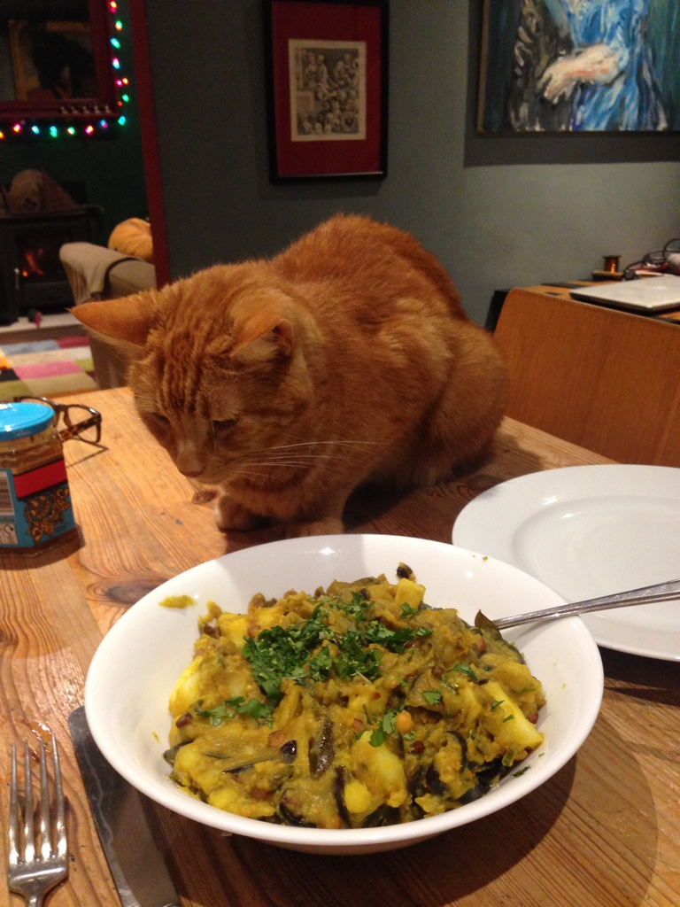

potato masala
smooth yet punchy potato
- 3 potatoes
- 1 onion
- mustard seeds
- green chilli
- 1 tbsp chana dal
- turmeric
- asafoetida
- ginger
- 7 or 8 curry leaves (these are hard to find but worth it)
- chop the potatoes, and put in a pan of salted water to boil
- while the potatoes are cooking, heat oil in a pan, and fry the chana dal until they turn golden brown
- chop the onion into slices (don't mince it!) and fry with the chana dal on a low heat till translucent
- add curry leaves, chopped green chilli, ginger and mustard seeds, and fry together
- add in the turmeric and asafoetida, then add some water and simmer for a few minutes
- once the potatoes are soft, mash them, and stir into the onions. season with salt, and a pinch of sugar, and simmer until thick
goes well with dosa and pickles